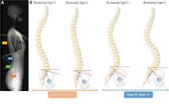

This script provides an overview of the querying and cleaning processes in SQL, highlighting key metrics such as total records processed, identified errors, cleaned datasets, and query execution times. Analyze database quality, track progress, and ensure optimized performance for accurate and reliable data management.
This Script provides insights into the database creation process using PostgreSQL, highlighting key metrics such as schemas created, tables defined, data types assigned, constraints applied, and relationships established. Track progress, ensure structural integrity, and monitor resource allocation for robust and scalable database solutions.
This study aims to evaluate the extent to which paediatric radiography practices in Anambra State adhere to established standards. It focuses on identifying areas of compliance and non-compliance, assessing the factors influencing adherence, and exploring strategies to enhance the quality of radiographic procedures. By addressing gaps in compliance, this assessment seeks to improve patient safety, optimize diagnostic accuracy, and promote best practices in paediatric radiography. The findings will provide valuable insights for healthcare policymakers and practitioners to ensure high standards in radiographic services for children.

This study investigates the sacral base angle and lumbar lordosis among healthy individuals in Anambra State to establish reference values for the population. It aims to analyze variations in these spinal parameters based on factors such as age, gender, and body composition. The findings will contribute to understanding the normative range of spinal alignment in the region, serving as a baseline for diagnosing and managing spinal disorders. This evaluation will also enhance clinical decision-making and support the development of tailored healthcare interventions for spinal health..
This study explores the level of awareness of CT scans among motorcycle riders, focusing on their knowledge, perception, and access to this diagnostic imaging modality. It aims to identify gaps in awareness and understand the factors influencing their knowledge of CT scans, particularly in relation to injury assessment and medical care. The findings will provide valuable insights into the need for targeted health education and advocacy efforts to improve motorcycle riders' understanding of the importance of CT scans in managing injuries and ensuring better health outcomes.